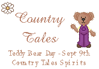
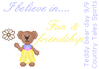
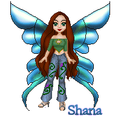
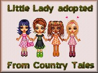
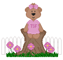
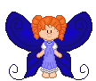
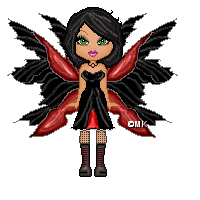
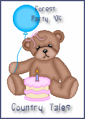

   
   
Here are just a few adoptions I've picked up.
August/September 2005:


Here are some things my little sister adopted for me!


Yikes...I'm going to be needing another page for adoptions! :)


Click on a button below to navigate:

Backgrounds created by My Mom
KountryKids tubes from:
CountryTubes by Amanda
http://www.amandashome.com/cntrytubes3.html